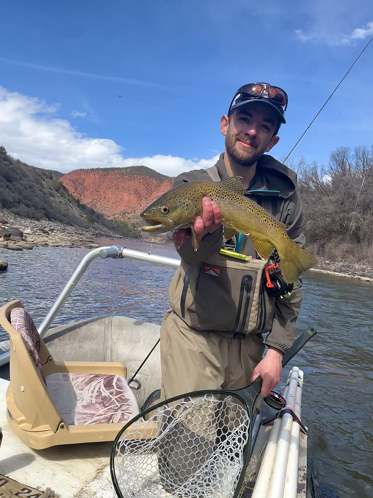

Guide
Matthew Presti
Southern Colorado native • Hometown: Pueblo, Colorado
Matthew is a Southern Colorado native who grew up fishing the Arkansas River and learning the rhythms of the region— from tailwater days to windy stillwaters and everything in between. He’s an avid fly fisherman and boater who values a straightforward approach: read the water, control depth, stay adaptable, and fish with intent.
After gaining experience guiding in Northern Colorado, Matthew now guides in the Arkansas Valley of Colorado and on the home waters of Silver Creek Lakes Club. His focus is helping anglers build a repeatable stillwater system—working structure, selecting a manageable set of presentations, and making smart changes based on wind, light, and water temperature.
Matthew loves boat fishing in Colorado’s mountain valleys and has a soft spot for big browns. Guided days on the property are available, along with select Arkansas River trips when conditions align.